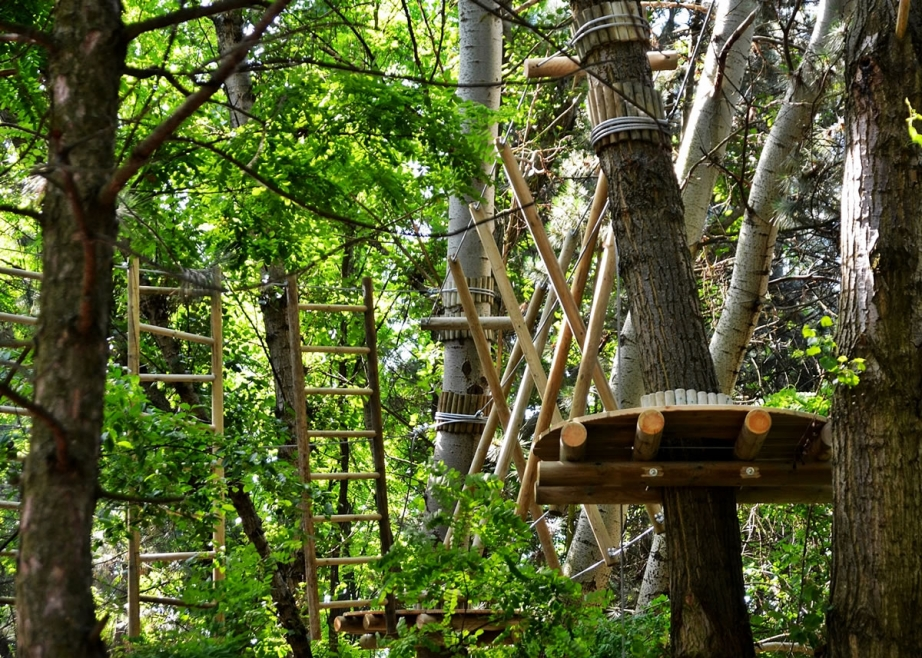
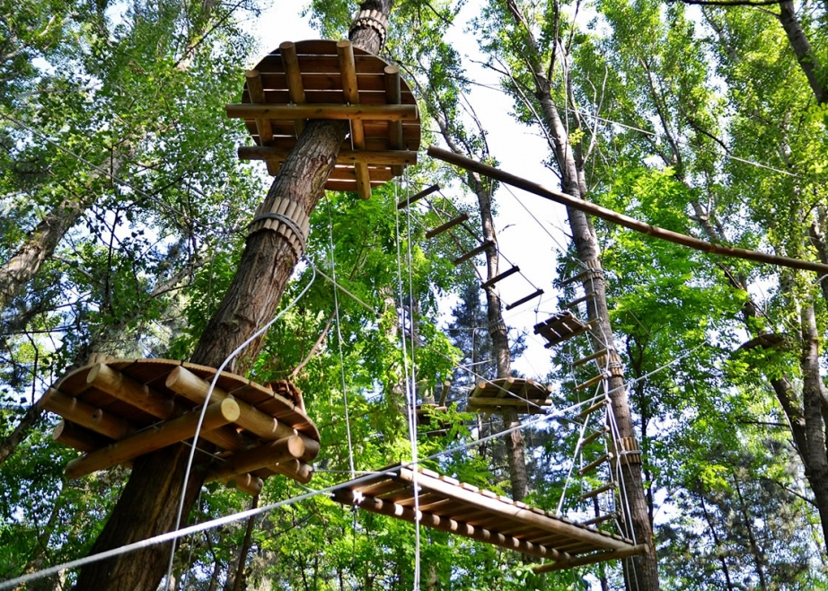
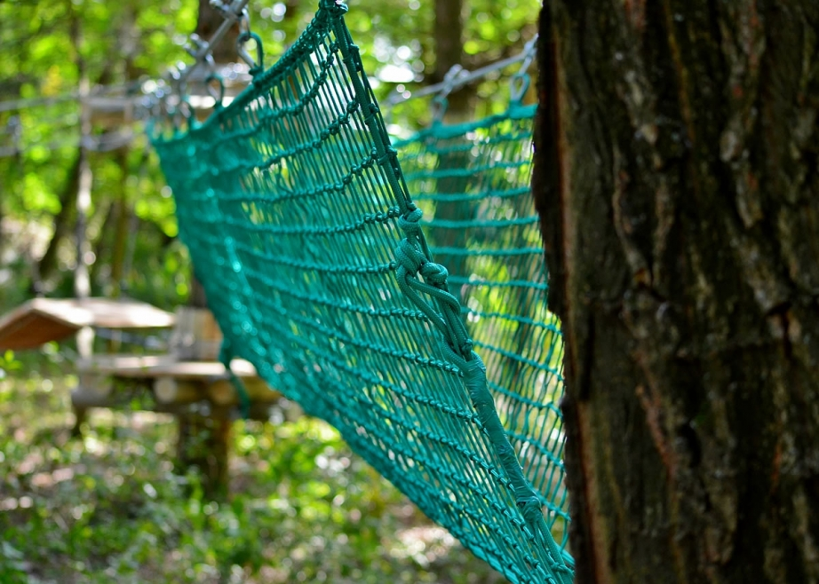

A kalandpark bemutatkozása
A Ceglédfürdő Kalandpark Budapesttől dél-keletre 65 kilométerre található, a 4-es és az M5-ös úton megközelíthető, de elérhető tömegközlekedéssel is, hiszen a Budapest Cegléd vonalon a Budai út megállótól 10 percre található. A 2014-ben megnyitott park éve áll rendelkezésre a kikapcsolódni vágyóknak.
A Kalandparkban gyakorló és gyermekpálya, kezdő és profi pálya, valamint a 6 átcsúszásból álló canopy egyaránt megtalálható. A vegyes fákból álló erdőben és a tó felett átvezető canopy valódi elszántságot igényel, 6,5 méter magasságból másképp néz ki a világ, de igazán sportos kikapcsolódást nyújt a négy, különböző nehézségű akadályokat nyújtó kalandpark pálya is a család minden tagjának. A Kalandpark a Ceglédfürdő és Csúszdapark közvetlen közelében található, a tó partján, a természet közelében. Itt valóban erdőben kirándulhat, sportolhat és kipróbálhatja magát, a természet tapintható közelsége pedig teljessé teszi a kikapcsolódást.
A gyermek pályákra 140 cm alatti kalandozókat várunk, felnőttpályáink pedig a legváltozatosabb kihívások elé állítják az embert. Mindez persze teljes biztonságban, hiszen darukötelek és karabinerek, valamint az alpin-mentésből vizsgázott stáb segíti a kalandozást.
A kalandparkról mondták

Azt gondoltam mikor megláttam az akadályokat, hogy egyszerűen teljesíthetőek, de aztán rájöttem hogy igazi kihívás a pálya, és sportolóknak is egészen más izmokat mozgat meg, mint a szokásos tevékenységek. A drótokon és a fák között ugrálni igazán nem egyszerű feladat, igazi ügyességet kíván. A hosszú lecsúszás a tó fölött pedig egyszerűen frenetikus élmény, kihagyhatatlan. Amikor az ember ezt végigcsinálja, úgy érzi tényleg teljesített valamit. Nagyon jó érzés :-)
Árak
IDŐKORLÁTOK NÉLKÜL!!
- FELNŐTT: 2.800 Ft
- 3-14 ÉV:2.000 Ft
- CSALÁDI 2 FELNŐTT 2 GYEREK: 8.500 Ft
- utána gyerekenként: 1500 Ft
- KÍSÉRŐJEGY:300 Ft
- CSOPORT 15 FŐ UTÁN: 1.800 Ft
- 5 ALKALMAS BÉRLET FELNŐTT: 10.500 Ft
- 5 ALKALMAS BÉRLET GYEREK: 8000 Ft
EGYÉB JÁTÉKOK
- DARTS: 500 Ft
- CSÓNAKÁZÁS: 1.200 Ft/ óra
- ZORB: 1.200 Ft
- AIRSOFT MESTERLÖVÉSZET: 800 Ft/ tár
- ÍJÁSZAT: 1.000 Ft
